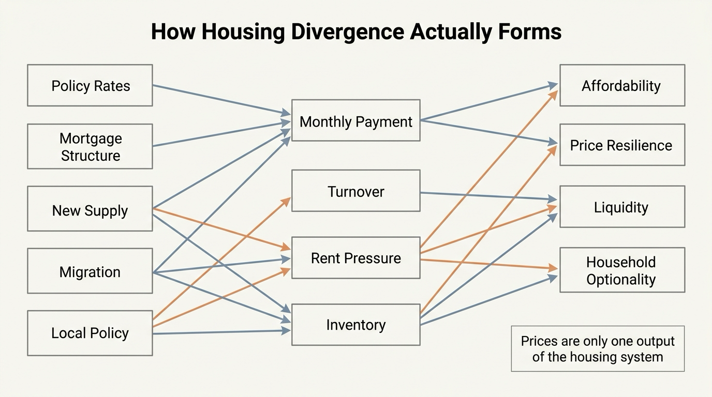

The Global Housing Divergence
Housing used to be discussed as if the whole world were running one synchronized trade. That frame now fails. One country can still be dealing with rate shock, another with chronic undersupply, another with demographic stagnation, and another with migration-driven rent pressure. The result is not one housing market. It is a set of increasingly different housing regimes.
Why the One-Story Housing Narrative Broke
That matters because households often import conclusions from the wrong market. A buyer in a supply-constrained city reads about price weakness elsewhere and assumes relief is coming. An owner in a shrinking region reads about national price resilience and assumes liquidity will hold. Both can be wrong, because the transmission channel from rates to prices now depends heavily on local supply elasticity, mortgage structure, migration, and the share of owners already locked into older financing terms.
The practical implication is simple. Housing should be read less like a single asset class and more like a collection of policy-sensitive local balance sheets. Nominal home values, rents, turnover, and affordability can move in very different directions depending on which constraint dominates the market.
Established fact: cross-country housing indicators already show large variation in real house-price trends, price-to-income ratios, and price-to-rent ratios. Reasoned inference: those differences are not noise. They reflect distinct mixes of rate sensitivity, supply rigidity, demographics, and policy design that make housing outcomes diverge even under the same broad global macro backdrop.

Rates Matter, but Mortgage Structure Decides the Path
Higher policy rates do not produce the same housing effect everywhere. In markets dominated by short-reset debt or new buyers who must refinance at current rates, affordability shock appears quickly. In markets where existing owners hold long-duration fixed-rate mortgages, rates can freeze turnover before they crash prices. That creates a strange result: visible transaction volume weakens first, while listed prices adjust more slowly because locked-in owners do not want to sell.
This is why households should watch financing structure, not only central-bank headlines. The same policy move can create forced repricing in one system and gridlock in another. A turnover freeze is not the same thing as a healthy market. It often means prices are being supported by illiquidity rather than by easy affordability.
Supply Rigidity Turns Demand Pressure Into Permanent Divergence
Supply is the second major separator. Where zoning, land scarcity, infrastructure bottlenecks, or political resistance restrict new construction, even modest population or income gains can keep housing structurally expensive. Where supply can respond faster, the same demand shock may fade without creating a decade-long affordability problem.
That is why global housing divergence is not only a monetary story. It is also a buildability story. Two cities can face similar mortgage costs and still diverge sharply because one can add units while the other cannot. In that setting, rent pressure, ownership affordability, and mobility value stop moving together.
Demographics and Migration Are Reordering the Map
Some markets are still supported by population inflow, labor concentration, or cross-border capital interest. Others face aging populations, weak household formation, or internal outmigration. The point is not that demographics determine everything. It is that they heavily influence whether a rate shock lands on top of rising occupancy demand or on top of a structurally thinning buyer base.
That distinction explains why the same affordability ratio can mean different things. A high ratio in an inflow market may reflect severe scarcity and continued competition for location access. A high ratio in a stagnating market may instead reflect valuations that have not yet adjusted fully to weaker future demand.

Households Should Separate Price, Liquidity, and Optionality
The biggest mistake is to treat price resilience as proof of balance-sheet strength. A market can look stable while becoming harder to move through. If mortgages are locked, listings are scarce, insurance and tax costs are rising, and labor mobility is weakening, the household may be carrying an asset that is nominally strong but operationally restrictive.
That is why this topic belongs beside The Mortgage Lock-In Trap, The Rent vs Buy Reversal, The 2026 Housing Stall, and The Urban Premium Collapse. Together they show that housing wealth should be judged by cost of carry, exit flexibility, and strategic usefulness, not by headline appreciation alone.
| Housing regime | Main support | Main risk |
|---|---|---|
| Supply-constrained global city | Scarcity, high-income demand, migration inflow | Persistent affordability breakdown and mobility loss |
| Fixed-rate lock-in market | Owners resist selling into higher-rate conditions | Turnover freeze and weak market liquidity |
| Buildable growth corridor | Faster new supply response | Overbuild risk if demand softens |
| Demographic slowdown market | Legacy valuations and low listings | Stagnant demand base and slower exit over time |
Decision-Grade Take for Readers
The useful housing question is no longer “Where are prices going?” It is “Which regime am I in?” Once that is answered, households can judge whether the main threat is affordability, illiquidity, weak demand, political constraint, or refinancing risk. That yields much better decisions than importing a national or global housing narrative into a local market with different mechanics.
- Do not treat global housing headlines as if they map cleanly to your city or country.
- Read mortgage structure and turnover conditions alongside price data.
- Track supply elasticity and migration because they often explain divergence better than macro commentary does.
- Judge housing wealth by exit options and carry burden, not only by current mark-to-market value.
Known, Inferred, and Unknown
| Category | Assessment |
|---|---|
| Known | OECD and BIS data show wide cross-country dispersion in real house prices, price-to-income ratios, and price-to-rent ratios. |
| Known | Mortgage structure, especially the mix of fixed-rate versus reset-sensitive financing, changes how quickly higher rates feed into affordability and price behavior. |
| Known | Supply constraints and migration differences can keep housing expensive in one market while another weakens under similar global macro conditions. |
| Inferred | Housing divergence is likely to remain high because financing regimes, demographic patterns, and local political constraints are not converging quickly. |
| Unknown | Which large markets will normalize through income catch-up and supply growth versus which will adjust mainly through lower turnover, weaker real prices, or delayed nominal repricing. |
Source Frame
This article uses the OECD housing-price indicator and its definitions of real and nominal prices, price-to-income, and price-to-rent ratios from Housing prices | OECD.
For cross-country dispersion and the recent global picture, it uses BIS residential property price statistics, Q4 2024 and the related BIS residential property prices overview.
For measurement structure and comparability limits, it uses the OECD explainer Residential Property Price Indices and related housing indicators: Frequently Asked Questions. The unresolved question is not whether housing is local. It is how long investors and households continue to act as if it were still one global trade.
Stress-test the lifespan side of this balance-sheet story.
Open the matching LifeMeter scenario with a prefilled planning profile so the wealth case and the health-runway case can be read together.